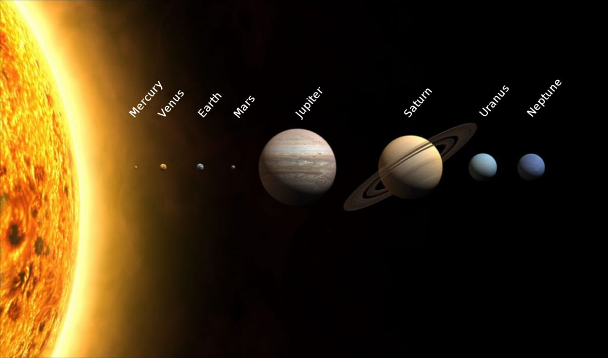
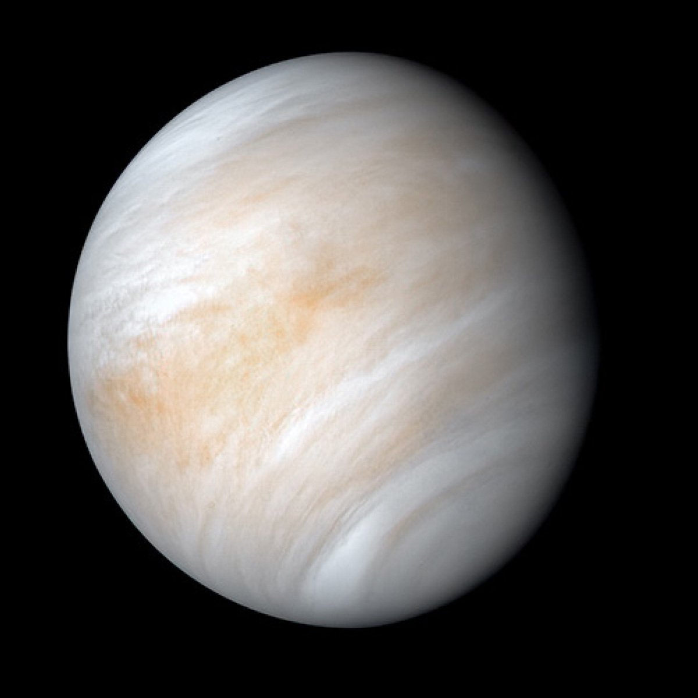
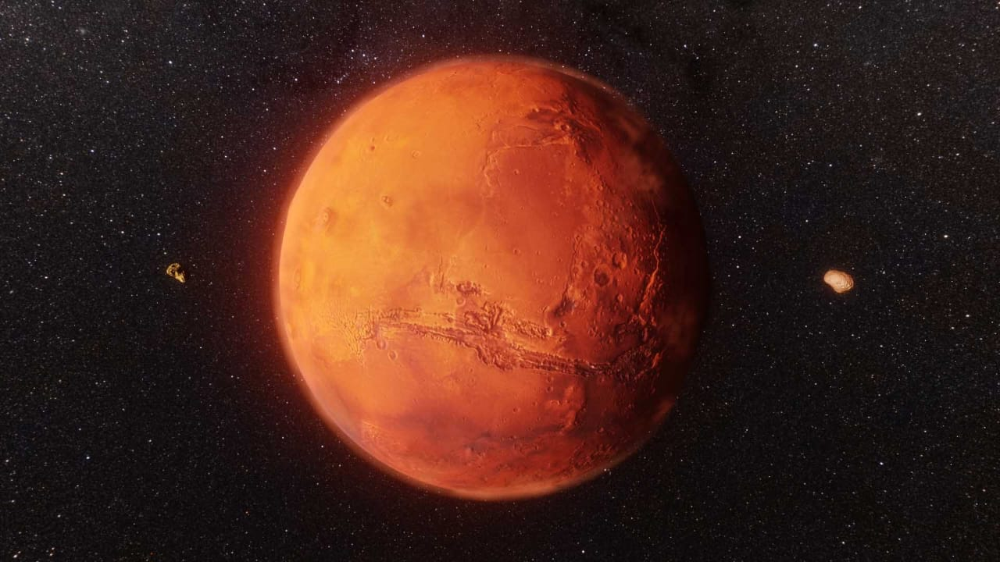
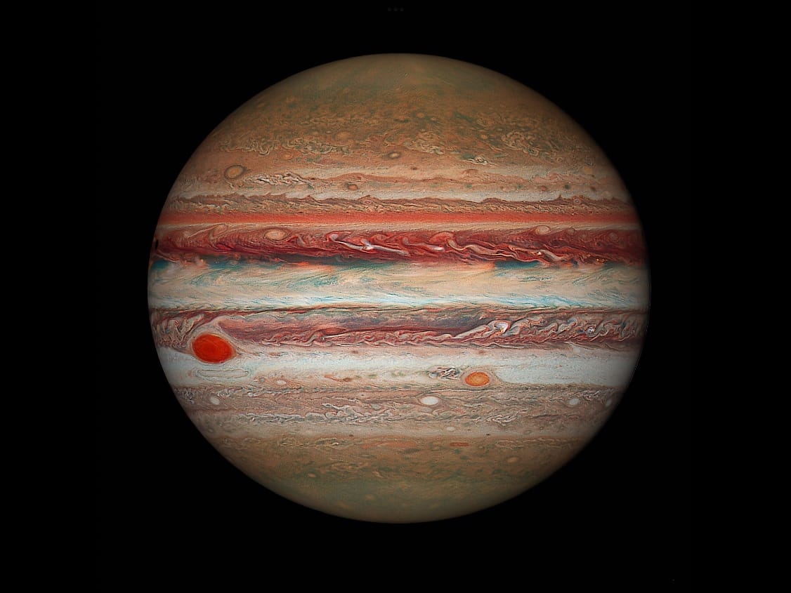
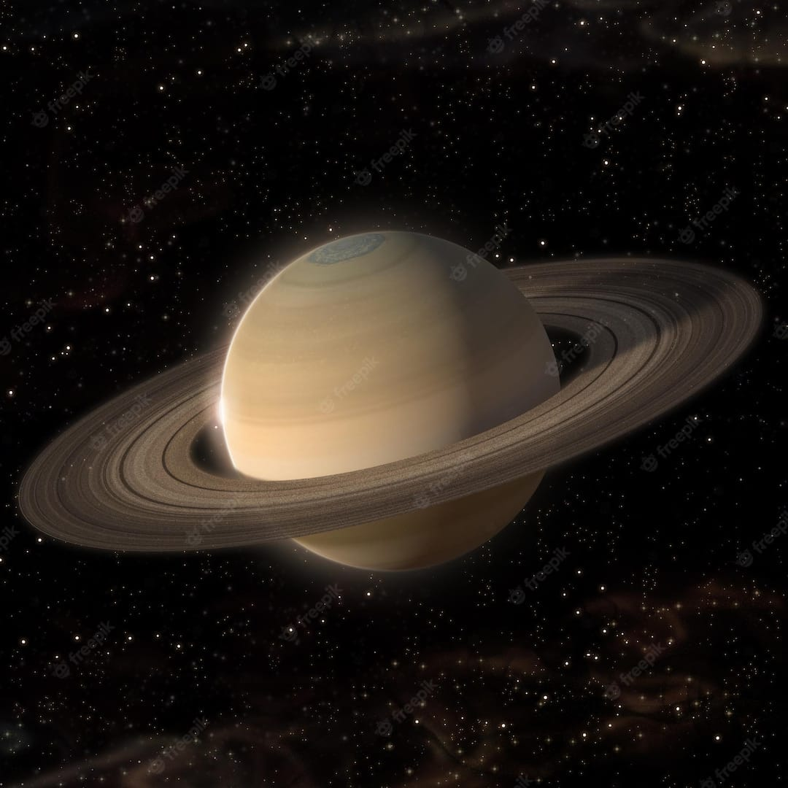
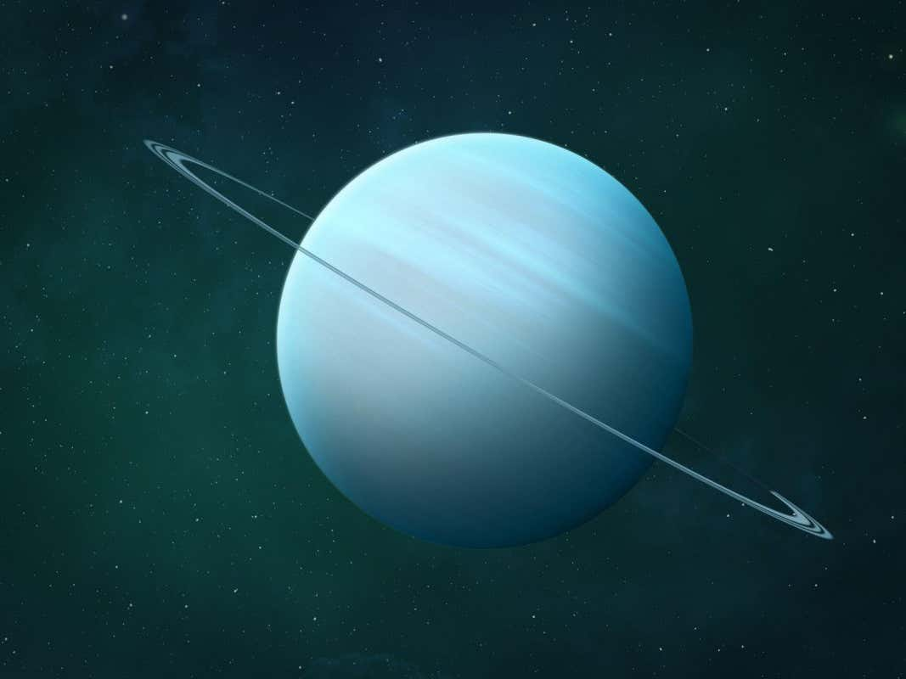
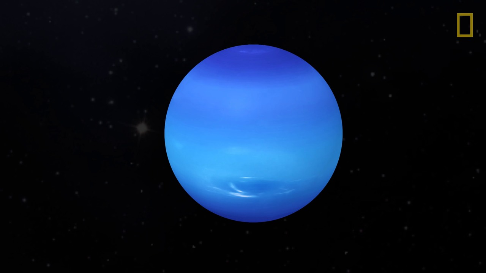

Our solar system consists of our star, the Sun, and everything bound to it by gravity – the planets
Mercury, Venus, Earth, Mars, Jupiter, Saturn, Uranus, and Neptune;
dwarf planets such as Pluto; dozens of moons; and millions of asteroids, comets, and meteoroids.
The word solar means "pertaining to the Sun", which is derived from the Latin word sol, meaning Sun.
The Sun is the dominant gravitational member of the Solar System, and its planetary system
is maintained in a relatively stable, slowly evolving state by following isolated,
gravitationally bound orbits around the Sun

The solar system extends from the sun, goes past the four inner planets, through the asteroid belt to the four gas
giants and on to the disk-shaped Kuiper Belt and far beyond to the teardrop-shaped heliopause.
Scientists estimate that the edge of the solar system is about 9 billion miles (15 billion kilometers) from
the sun. Beyond the heliopause lies the giant, spherical Oort Cloud, which is thought to surround the
solar system.The inner four planets closest to the sun — Mercury, Venus, Earth and Mars — are often called the
"terrestrial planets" because their surfaces are rocky.
Pluto also has a rocky, albeit frozen, surface but has never been grouped with the four terrestrials.
The four large outer worlds — Jupiter, Saturn, Uranus and Neptune — are sometimes called the Jovian or
"Jupiter-like" planets because of their enormous size relative to the terrestrial planets. They're also
mostly made of gases like hydrogen, helium and ammonia rather
than of rocky surfaces, although astronomers believe some or all of them may have solid cores.
The order of the planets in the solar system, starting nearest the sun and working outward is the following:

1- Mercury
2-Venus
3-Earth
4-Mars
5-Jupiter
6-Saturn
7-Uranus
8-Neptune
The solar system extends from the sun, goes past the four inner planets,
through the asteroid belt to the four gas giants and on to the disk-shaped Kuiper Belt and far beyond to the teardrop-shaped
heliopause.Scientists estimate that the edge of the solar system is about 9 billion miles (15 billion kilometers) from the sun.
Beyond the heliopause lies the giant, spherical Oort Cloud, which is thought to surround the solar system.
Now, Let's discuss about each planet
MERCURY :

The smallest planet in our solar system and nearest to the Sun,
Mercury is only slightly larger than Earth's Moon.
From the surface of Mercury, the Sun would appear more than three times as large as it does
when viewed from Earth, and the sunlight would be as much as seven times brighter.
Despite its proximity to the Sun, Mercury is not the hottest planet in our solar system
– that title belongs to nearby Venus, thanks to its dense atmosphere.Because of
Mercury's elliptical – egg-shaped – orbit, and sluggish rotation, set,
and rise again from some parts of the planet's surface. The same thing happens in reverse at sunset.
For more information :-refer here
VENUS :

Venus is the second planet from the Sun and is Earth’s closest planetary neighbor. It’s one of the four inner, terrestrial (or rocky) planets
, and it’s often called Earth’s twin because it’s similar in size and density. These are not identical twins, however –
there are radical differences between the two worlds.Venus has crushing air pressure at its surface – more than 90 times that of Earth –
similar to the pressure you'd encounter a mile below the ocean on Earth.Venus has a thick, toxic atmosphere filled with carbon dioxide and it’s
perpetually shrouded in thick, yellowish clouds of sulfuric acid that trap heat, causing a runaway greenhouse effect. It’s the hottest planet in our
solar system, even though Mercury is closer to the Sun
For more information :-refer here
EARTH :

Our home planet is the third planet from the Sun, and the only place we know of so far that’s inhabited by living things.
While Earth is only the fifth largest planet in the solar system, it is the only world in our solar system with liquid water
on the surface. Just slightly larger than nearby Venus, Earth is the biggest of the four planets closest to the Sun, all of which are made of rock and metal.
Earth is the only planet in the Solar System whose English name does not come from Greek or Roman mythology.
The name was taken from Old English and Germanic.It simply means "the ground." There are, of course, many names for
our planet in the thousands of languages spoken by the people of the third planet from the Sun.For more information :
-refer here
MARS :

Mars is the fourth planet from the Sun – a dusty, cold, desert world with a very thin atmosphere.
Mars is also a dynamic planet with seasons, polar ice caps, canyons, extinct volcanoes, and evidence
that it was even more active in the past.Mars is one of the most explored bodies in our solar system,
and it's the only planet where we've sent rovers to roam the alien landscape.
Mars was much wetter and warmer, with a thicker atmosphere, billions of years ago.
For more information :-refer here
JUPITER :

Jupiter has a long history of surprising scientists – all the way back to 1610 when Galileo Galilei found the
first moons beyond Earth. That discovery changed the way we see the universe.Fifth in line from the Sun, Jupiter is,
by far, the largest planet in the solar system – more than twice as massive as all the other planets combined.
Jupiter's familiar stripes and swirls are actually cold, windy clouds of ammonia and water, floating in an atmosphere
of hydrogen and helium. Jupiter’s iconic Great Red Spot is a giant storm bigger than Earth that has raged for hundreds of years.
For more information :-refer here
SATURN :

Adorned with a dazzling, complex system of icy rings, Saturn is unique in our solar system.
The other giant planets have rings, but none are as spectacular as Saturn's.
Saturn is the sixth planet from the Sun and the second-largest planet in our solar system.
Adorned with thousands of beautiful ringlets, Saturn is unique among the planets.
It is not the only planet to have rings – made of chunks of ice and rock – but none are as spectacular or as complicated as Saturn's.
Like fellow gas giant Jupiter, Saturn is a massive ball made mostly of hydrogen and helium.
For more information :-refer here
URANUS :

Uranus is the seventh planet from the Sun, and has the third-largest diameter in our solar system.
It was the first planet found with the aid of a telescope, Uranus was discovered in 1781 by astronomer
William Herschel, although he originally thought it was either a comet or a star.
It was two years later that the object was universally accepted as a new planet, in part because of observations
by astronomer Johann Elert Bode. Herschel tried unsuccessfully to name his discovery Georgium Sidus after King George III.
Instead, the scientific community accepted Bode's suggestion to name it Uranus, the Greek god of the sky, as suggested by Bode.
For more information :-refer here
NEPTUNE :

Neptune—the eighth and most distant major planet orbiting our Sun—is dark, cold and whipped by supersonic winds.
It was the first planet located through mathematical calculations.
Dark, cold, and whipped by supersonic winds, ice giant Neptune is the eighth and most distant planet in our solar system.
More than 30 times as far from the Sun as Earth, Neptune is the only planet in our solar system not visible to the naked eye
and the first predicted by mathematics before its discovery. In 2011 Neptune completed its first 165-year orbit since its discovery in 1846.
NASA's Voyager 2 is the only spacecraft to have visited Neptune up close. It flew past in 1989 on its way out of the solar system.
For more information :-refer here